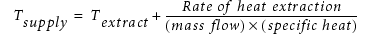

To access: Select a Recirculation Device SmartPart, then select the Construction tab.
Use this property sheet tab to change the specification of a heating or refrigeration circuit SmartPart. By optionally adding a fan curve and a shear output profile, you can model blowers.
Field |
Description |
|---|---|
Flow Type |
The flow rate of air passing through the recirculation device can be defined by:
|
Volume Flow Rate |
(Volume Flow Rate) The total volume flow rate. This total flow rate is divided, proportionally by area, between all the supply entities, and is similarly divided between all the extract entities. (Linear and Non-Liner Fan Curve) The volume flow rate at 0 (zero) pressure. Defines one of the end points of the linear or characteristic curve. |
Pressure |
(Linear and Non-Liner Fan Curve) The pressure at 0 (zero) volume flow rate. Defines one of the end points of the linear or characteristic curve. |
Fan Curve Chart |
(Non-Liner Fan Curve) Click Click to Edit to open the Fan Curve Chart window, see Fan Curve Chart Dialog Box. |
Velocity |
(Normal Velocity at Supply) The flow velocity normal to the supply outlet. |
Thermal Property |
Defines how cooling (or heating) is determined (see “Thermal Properties of Recirculation Devices”).
|
Temperature Change |
(Temperature Change) The temperature at which the air is supplied back to the enclosure is: Tsupply = Textract + ΔT where Textract is the mean temperature calculated by the program for the air adjacent to the extract. |
Heat Input/Extraction Rate |
(Heat Input/Extraction Rate) The temperature at which the air is supplied back to the enclosure is:  Extracted heat should be set as a negative quantity. The specific heat of the air is set in Fluid property attached to the system. The extract temperature is the temperature determined by the program adjacent to the extract. |
Exchanger Model |
(Heat Exchanger) Two models of heat exchanger are available: Simple or LMTD. |
Temperature |
(Heat Exchanger and Simple) Refer to “Heat Exchanger Simple Model”. |
Heat Transfer Coefficient |
|
Fluid |
(Heat Exchanger and LMTD) Refer to “Heat Exchanger LMTD Model”. |
Secondary Volume Flow Rate |
|
Temperature |
|
Heat Transfer Coefficient |
|
Configuration Type |
|
Maximum Power |
(CRAC) The CRAC unit’s maximum available power to cool or heat the extracted air. |
Desired Temperature |
(CRAC) The desired change in temperature between the extracted air and the resupplied air. |